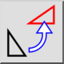
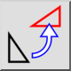
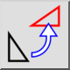
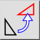

Ruota
Barra degli strumenti / Icona:
 

Menù: Modifica > Ruota
Scorciatoia: R, O
Comandi: rotate | ro
Questa è una traduzione automatica.
Barra degli strumenti / Icona:
 

Menù: Modifica > Ruota
Scorciatoia: R, O
Comandi: rotate | ro
Ruota le entità di un determinato angolo intorno a un determinato centro.